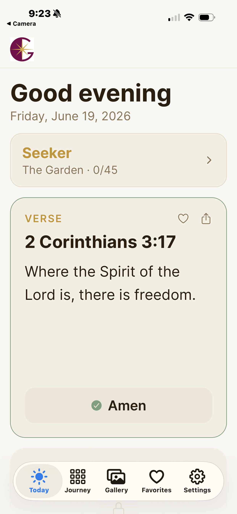
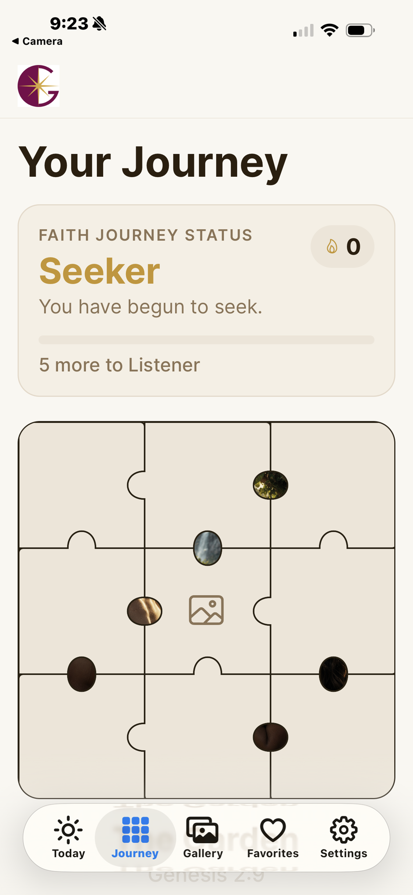
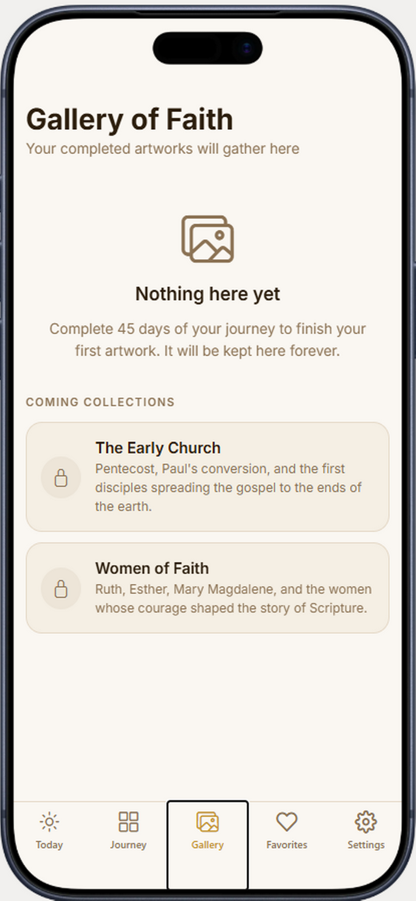
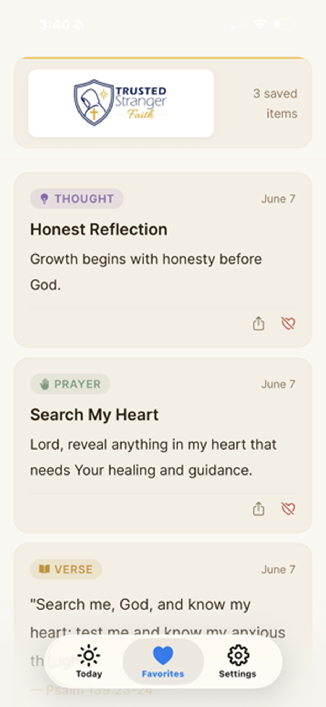
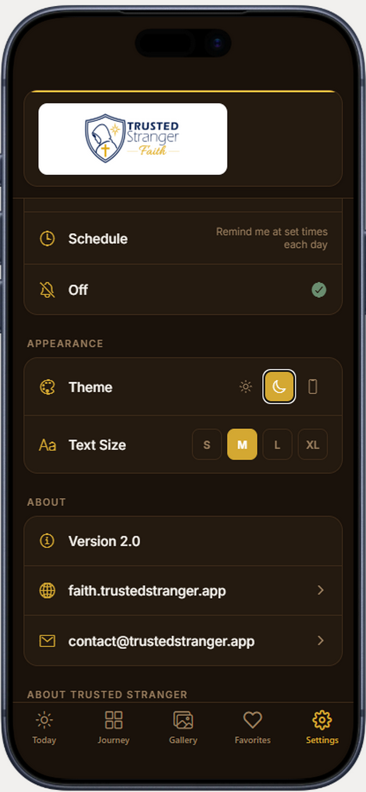

Daily Scripture
Find Bible verses selected to encourage, strengthen, and guide you.
Gide – Faith
Daily scripture, meaningful prayer, quiet reflection, and encouragement rooted in faith.
Download on the App StoreFeatures
Gide – Faith is designed to help you pause, reflect, pray, and stay encouraged throughout the day.
Find Bible verses selected to encourage, strengthen, and guide you.
Access prayers for everyday situations, reflection, and support.
Receive reminders designed to bring peace, hope, and daily focus.
Screenshots
A simple, calm experience for scripture, prayer, reflection, and daily encouragement.





FAQ
Start today
Download Gide – Faith for daily scripture, prayer, reflection, and peaceful reminders.
Download on the App Store